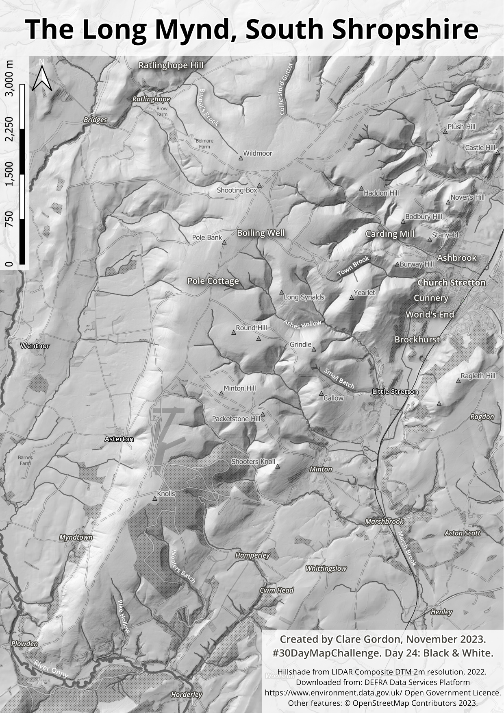

Black and white
The Long Mynd
The hillshade background shows the shape of the plateau incised by deep valleys, locally known as Batches. The bedrock is Precambrian - some of the oldest in Britain. Signs of human presence go back to the Ice Age. I’ve lived away from Shropshire for over 30 years, but the sight of The Long Mynd from the west still means “home” to me.

Data
More information at: https://experience.arcgis.com/experience/753ad2ebd3554fa696885b8c366c3049
Copyright: Open Government Licence
- Other features: © OpenStreetMap Contributors 2023.
What did I learn?
- More about the geography of the Long Mynd.
What would I do differently or want to find out?
- I’d like to add some more information about some of the locations on the Long Mynd, such as Pole Cottage and Boiling Well.
- It would be nice to add some photos - but they wouldn’t be black and white!
Process (more detail about how I made the map)
- Downloaded and merged the Lidar DTM. Styled it as a hillshade in QGIS and used it as the background.
- Added OpenStreetMap data, selected the parts I wanted to show, e.g. tracks but not paths, and styled and labelled it all. Only using white and shades of grey was a challenge!
- Set up layout and exported.